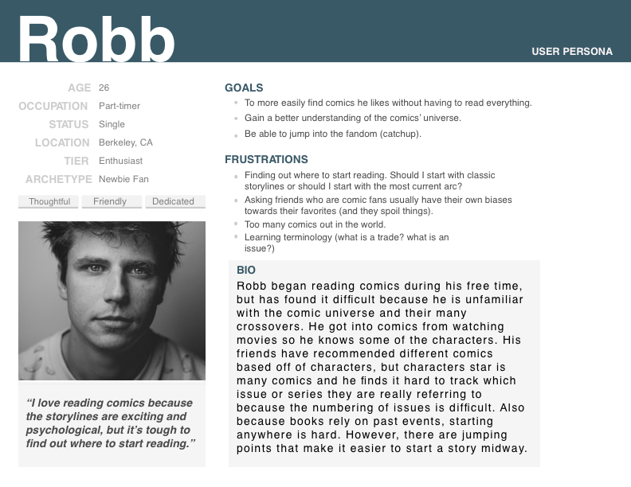
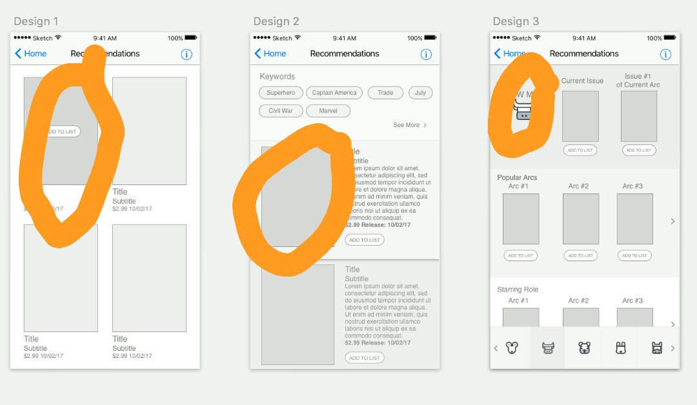
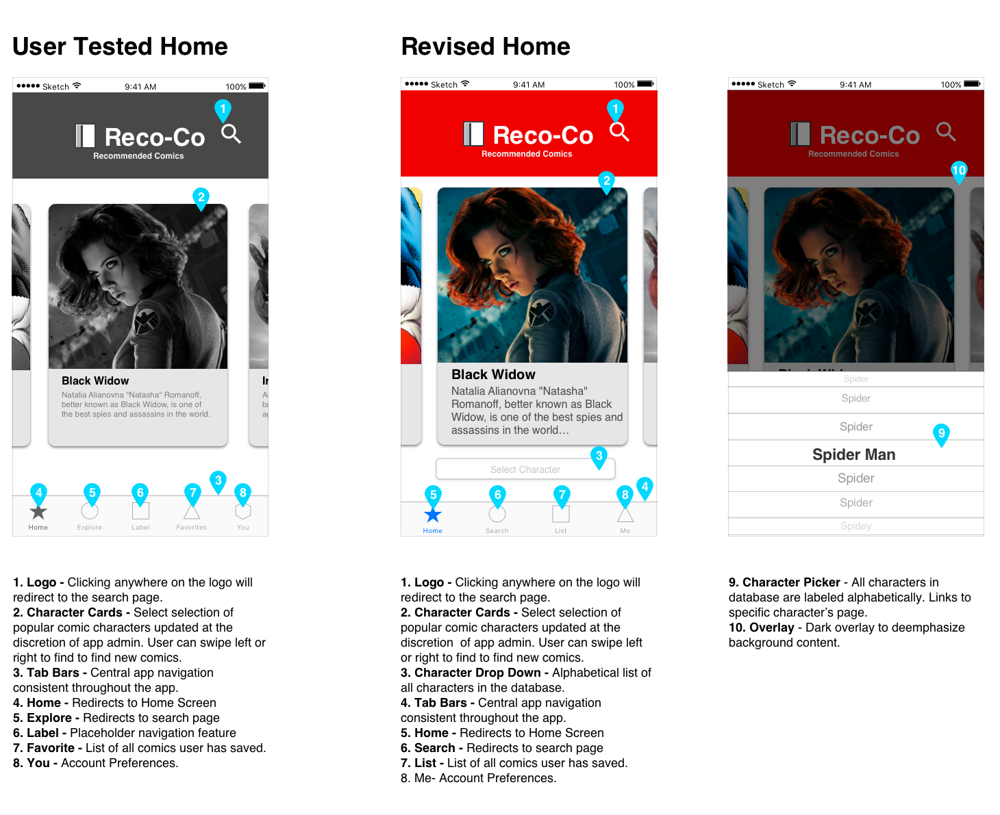
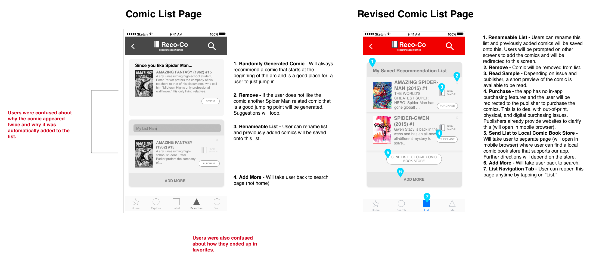

Reco-co - A Comic Recommendation App
Background
From user research, we discovered that book readers didn't have many pain points trying to keep track of which books to read. However, comic book readers who tried to read books in a series had an issue tracking new releases and keeping up with plot lines.
Problems We're Trying to Solve
· How can users spend more time enjoying comics instead of finding out which comics to read?
· How do you remove the frustration of searching through too many options?
Process
· User Interviews of Comic Book Readers and Sellers
· Defining the Problem Statement
· Rapid Prototyping & User Testing
· Iterating & More User Testing
Persona Based on Research - The Guy who wants to Read Comics

User Goals for App
- Enjoy comics
- Spend less time finding comics, more time reading comics.
- Easily find comics without having to read 50 comics he doesn't like first.
- Gain a better understanding of how different comic books are connected to one another.
- Be able to dive into the fandom head first.
Early Wireframes + Rapid User Testing

The first initial user test aimed to see how a user would react to a screen and how he would navigate without any prompting. He was not told this was an app for comics or if or how these screens connect and was only presented with these screens. For all of the designs, the user mentioned he wanted to click on a picture. These wireframes are three different possible designs for the recommendation page(homepage).
What do you expect to see after you click and what task do you think you can complete on this page?
Design 1:
What do you expect to see after you click and what task do you think you can complete on this page?
Design 1:
- When clicked, he imagined the picture clicked would zoom in and “Like a whole new page where you scroll down and there’s more info” would appear.
- Pick a movie to watch (purchase/ rent)
- He doesn’t really know what would come up for the second one because all of the information he needs is there. He guesses if it was a list of things to buy, it would be added to his cart for check out.
- Pick a movie to watch (purchase/ rent)
- Just wanted to click the cow to see if something would happen. He guesses it would take him back to see a root menu if he clicked the cow.
- Pick a book to read.
- Likes the third one because it seems like he can side scroll and because there are different sections.
- Keywords thing (design 2) takes a lot of space. He doesn’t find it helpful.
Revised Wireframes
Revised wireframes decided to use scrolling and work on a more picture focused app as that what the user was most attracted. (Animals are a place holder for comic heroes.)

Hi-Fidelity Prototype + User-Testing
Users were given a series of four tasks that took them through the journey of being someone who just needs a starting point to becoming a more intermediate fan who need needs more advanced features. Each iteration of the test aims to see if the app will answer the pain points found from the earlier issues.
Design-wise, this iteration maintains the same swipe feel, but follows standard navigation for iphones more closely.
Design-wise, this iteration maintains the same swipe feel, but follows standard navigation for iphones more closely.
Does this solve the pain point of finding a starting point?
The first test situation was designed to check the flow of the app. It was important to know where the user would first click to start. The entry point into the app is through searching for a character. The remaining test situations tested out different features of the app (removing an app, finding more recommendations, finding related comics in the more advanced features).
Example Situation
You just watched the new Spider Man movie and want to start reading the comics, but you haven’t read any comics before and you’re not sure where to start. You heard about an app called Reco-Co and decide to use it find a Spider Man comic to purchase.
Testing for:
Example Situation
You just watched the new Spider Man movie and want to start reading the comics, but you haven’t read any comics before and you’re not sure where to start. You heard about an app called Reco-Co and decide to use it find a Spider Man comic to purchase.
Testing for:
- How does the app flow?
- Is it easy to find one comic?
- Are there navigation issues?
- Users found it easy to find a single comic.
- It was difficult to access and find the information for more advanced users during the user testing because of comic-specific jargon. The user was unclear about what the task was asking.
- The text was lengthy (making it difficult to know what to do) and iconography was confusing.
- Text size was too small.
- It was confusing to know where you were in the app (navigation issues).
- The user thought explore would be more free form instead of being search (word usage)
The Solution + Revisions
A "Character-based" Approach:

- Entry point: Searching for a character s/he is interested in
- Improved ability to search
- Dropdown listing of all characters in database
- Simplified navigation options (instead of explore, search)
- Card-design for user to click on the image
Revisions to the Home Screen
- Users understood to swipe card to find specific character.
- Cards are limited (and change) so other than search there needed to be a feature on the home screen that would let the user known what options would always be available.
- Only the most necessary tab bars are included and have straightforward labels

Changes to Character Page

More Upfront about information.
- Directly recommends comics on the page
- More pictures/ less reading
Changes to Recommendation List

- Straight foward
- Automatically adds comic when you add to list
What is this app really?
This app is like training wheels for a comic book reader. It helps show the user how to navigate through the comic book world but gives them enough agency to make decisions about what they want to read. The user grows with the app as s/he becomes "more advanced in comics."
Improvements
This app still has a lot of limitations. One of the biggest limitations is that after the user finds comics to read, he has to act on his own to purchase it. While the goal of the app is to find comics, it still leaves much to be desired. In addition, it's difficult to search for one comic or find a specific issue. While there is an option to find a specific issue within an arc, it would still take many steps to get there.